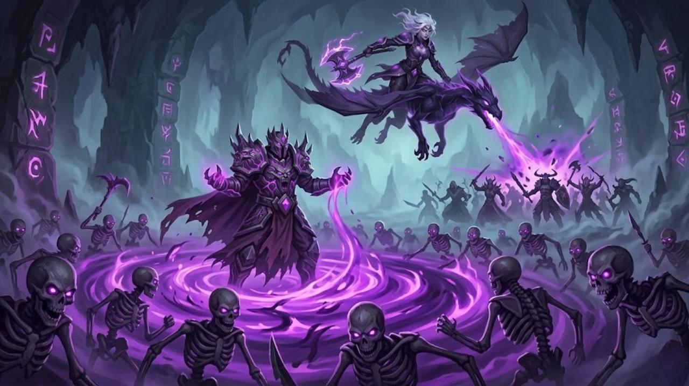

The Resurrection Team
Malakor & Xylia

The Cause:
Xylia owes her existence to Malakor, and Malakor needs Xylia as his immortal aerial commander.
The Story:
They are a lethal tactical unit. Malakor raises skeleton armies on the ground while Xylia leads the air strikes. On your Troops Page, their hover effects could "complement" each other—for example, Xylia's stats appearing when hovering over Malakor's card, or vice versa.